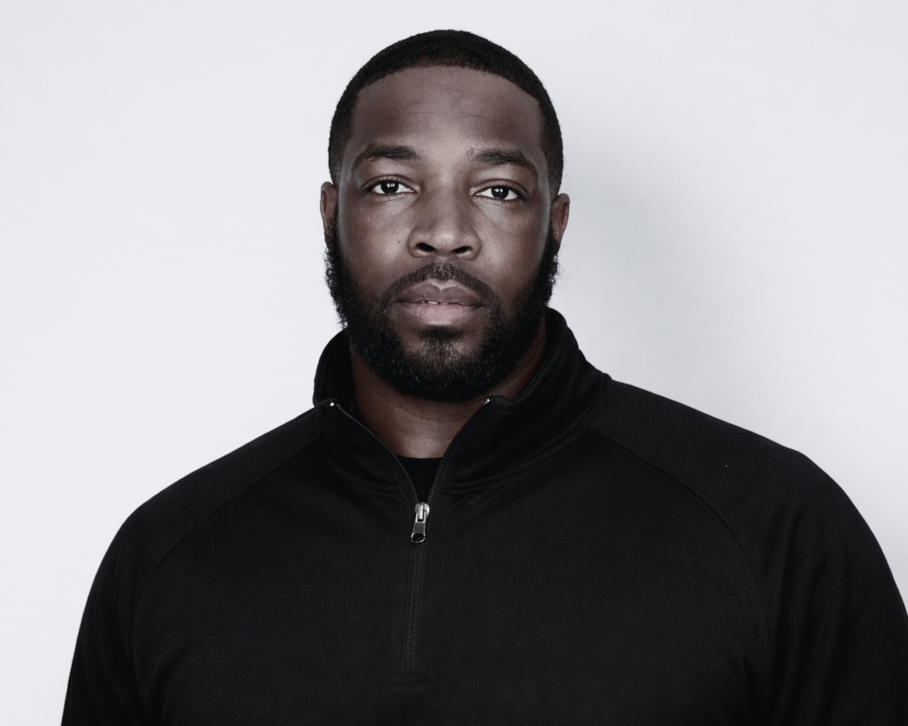
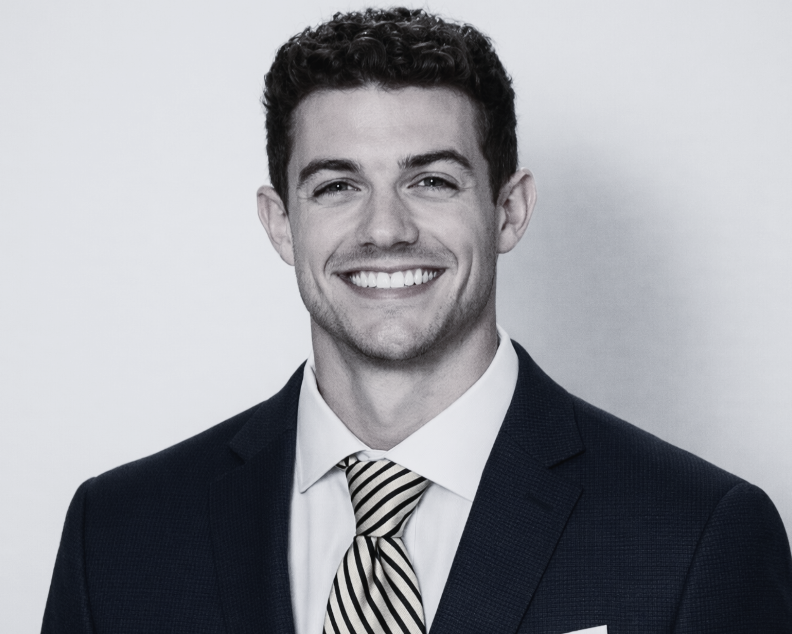

You Don’t Just Get an Agent. You Get a Team.
Representation today requires more than one role. Our team brings together expertise across development, strategy, branding, and athlete support.
Leadership Team
The visionaries guiding our mission

Dan Furman
CEO
Dan Furman, originally from Brookhaven, PA, has over five years’ experience in university development, serving as the Associate Director of Development for Major Gifts for Louisville Athletics before joining 502Circle. Dan also brings with him a background with the ACC Conference Office and his own experience as a student-athlete with University of Pittsburgh Baseball. In his previous role, Dan secured north of $15 million in commitments to Louisville Athletics and built relationships with companies like Angel’s Envy, Galt House Hotel, and Buffalo Construction.

Mario Washington
COO
With 33 years of military service, Mario Washington commanded at the company, battalion, and garrison levels, earning a reputation for exceptional performance in both command and high-level staff roles. He holds a bachelor’s degree and two master’s degrees and will leverage his outstanding leadership and planning skills as the Chief Operating Officer for Prodigy Sports Group. Mario is happily married with two children and is an avid sports fan.

[Staff Name]
[Title]
Kelsey Thornton serves as Chief Strategy Officer at Prodigy Sports Group, where she leads brand strategy, athlete positioning, and internal structure across the agency. She works closely with agents and athletes to build clear, practical plans that connect performance, visibility, and opportunity. Her background is in marketing, brand development, and business strategy, with experience building social media platforms and helping individuals and organizations grow. She has led teams, built messaging from the ground up, and created systems that bring structure and consistency to growing organizations. At Prodigy, she oversees brand direction, NIL positioning, and communication strategy, helping athletes define who they are and how they show up. Her focus is on making sure everything is aligned, from development to brand to opportunity, ensuring athletes can make the best long-term decisions.
Agency Staff
The professionals behind your success

Kiran Rao
Chief of NIL Strategy
Kiran Rao leads NIL strategy and operational execution across Prodigy Sports Group’s athlete representation business. A graduate of the University of Louisville, he began his career as a student manager within the basketball program, gaining firsthand experience in high-level collegiate athletics.
He later worked within athletics at Georgetown College, where he built strong relationships across coaching staffs and athletic departments.
Combining his experience in college athletics with a deep understanding of NIL, Kiran plays a key role in organizational strategy, deal execution, and long-term growth.

Baylee Stewart
Director of Athlete Brand & NIL
Baylee brings hands-on experience in the NIL space, working directly with athletes to build their brands and navigate opportunities. She supported a Big Ten football program and developed her expertise in athlete marketing and digital strategy as a graduate of the University of Tennessee.
At Prodigy, she leads athlete brand development, content direction, and partnership alignment, helping athletes grow their visibility and create meaningful opportunities that support long-term career success.

Tre Campbell
Basketball Advisor
A former Division I player at Georgetown and South Carolina, Tre brings a strong background in high-level playing and elite player development. He gained national recognition during his time at IMG Academy, where he worked with top high school prospects, including multiple NBA Draft selections and nationally recognized All-Americans.
Known as a trusted basketball mind, Tre leverages his relationships with coaches, trainers, and programs nationwide to evaluate talent, guide key decisions, and help athletes build long-term careers.

Rob Peterson
Basketball Advisor
Rob Peterson is a former collegiate player and coach with deep roots in the basketball world. The son of longtime college and NBA coach and executive Buzz Peterson, he brings both lineage and perspective shaped by a lifetime around the game.
After playing at High Point University under Tubby Smith and coaching at the collegiate level, Rob offers a strong understanding of today’s evolving basketball landscape.
He leverages both his recent coaching experience and lifelong relationships across the sport to help athletes navigate key decisions and position themselves for long-term success.

Sean Mohollen
Basketball Advisor
[INSERT BIO]

Andrew Pipes
General Counsel
[INSERT BIO]